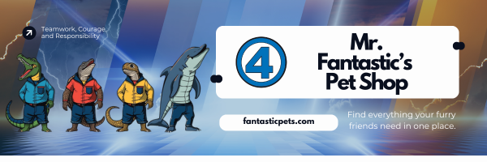

Salmanders
salamnders are unique little reptiles, with over 500 different species it's almost guranteed to see a level of disversity between them.
Fun Facts
- Salamanders have the very unique ability to regrow their limbs & parts of their organs after they are lost.
- Salamanders moist skins grants them the unique ability to breath through the skin, which if benefical for them if their lungs aren't functioning well.
- Salamanders have wonderful adpativity, capable of adapting to various enviornment in a short amount of time.
- Salamanders are a keystone species in the ecosystem, dealing with insects population and are overall indicators of a healthy enviornment.
Pictures of different species